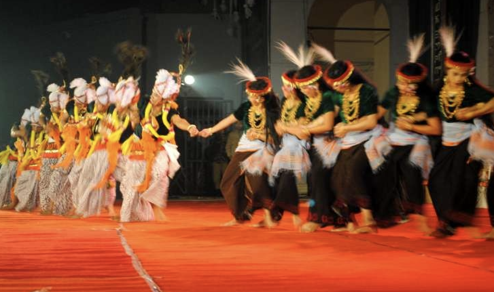

üé≠‚ú® Dance and Music of Mizoram ‚Äì A Rhythmic Fusion of Grace and Heritage üï∫üé∂
Classical Dance of Manipur üí´

Ras Lila – A divine dance-drama depicting Radha-Krishna’s love.
Manipuri Classical Dance – Graceful, devotional dance rooted in Vaishnavism.
Folk & Tribal Dances of Manipur ü•Åüé≠

Thang-Ta – A martial art dance with swords and spears.
Maibi Jagoi – Ritual dance performed by priestesses.

Khamba Thoibi – A romantic folk dance of love and devotion.
Nupa Pala (Kartal Cholom) – Cymbal dance with rhythmic clashing sounds.
 – Cymbal Dance.jpg)

Lai Haraoba Dance – Sacred dance symbolizing creation and evolution.
Traditional Music of Manipur üéµ

Pena Music – Melodic storytelling with a one-stringed fiddle.
Nata Sankirtana – Devotional music performed in temples.


Tribal & Folk Music – Songs of war, harvest, and love using traditional instruments.